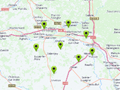

Example of how to change the sort order of the markers.
Requirement: Tileset Control
Usage instructions:
Add this script to map GameObject.
Add this script to map GameObject.
TilesetMarkerDepthExample.cs
/* INFINITY CODE 2013-2016 */
/* http://www.infinity-code.com */
using System.Collections.Generic;
using UnityEngine;
namespace InfinityCode.OnlineMapsExamples
{
[AddComponentMenu("Infinity Code/Online Maps/Examples (API Usage)/TilesetMarkerDepthExample")]
public class TilesetMarkerDepthExample : MonoBehaviour
{
private OnlineMapsMarker mapMarkerMiddle;
private OnlineMapsMarker mapMarkerTop;
private OnlineMapsMarker mapMarkerBottom;
public class MarkerComparer : IComparer<OnlineMapsMarker>
{
public int Compare(OnlineMapsMarker m1, OnlineMapsMarker m2)
{
if (m1.position.y > m2.position.y) return -1;
if (m1.position.y < m2.position.y) return 1;
return 0;
}
}
private void Start()
{
OnlineMaps api = OnlineMaps.instance;
mapMarkerMiddle = api.AddMarker(new Vector2(0, 0));
mapMarkerTop = api.AddMarker(new Vector2(0, 0.01f));
mapMarkerBottom = api.AddMarker(new Vector2(0, -0.01f));
OnlineMapsTileSetControl.instance.markerComparer = new MarkerComparer();
Vector2 center;
int zoom;
OnlineMapsUtils.GetCenterPointAndZoom(api.markers, out center, out zoom);
api.position = center;
api.zoom = zoom;
}
private float OnGetFlatMarkerOffsetY(OnlineMapsMarker marker)
{
if (marker == mapMarkerTop) return 1;
if (marker == mapMarkerMiddle) return 0.5f;
if (marker == mapMarkerBottom) return 0;
return 0;
}
}
}